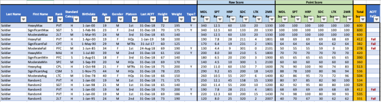
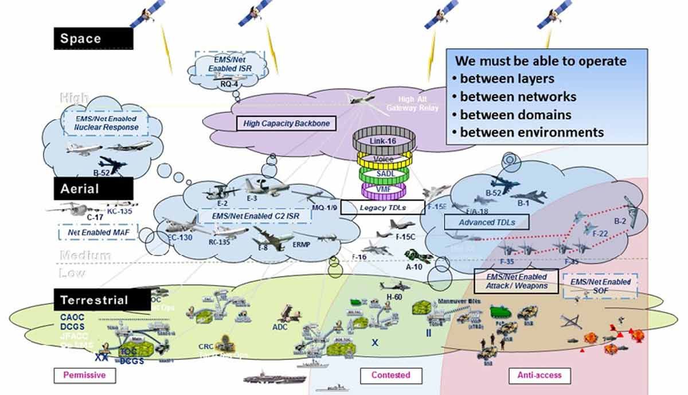
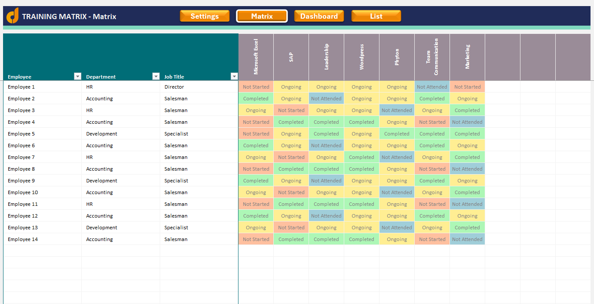

SIDEKICK AI
Multi-Agent System for Military Logistics
Brian Ellis
AI Software Engineer | Secret Clearance
August 2025
My Journey to AI Engineering
Military Background
6 years USAF Cyber Defense • Secret Clearance • RF Monitoring ML
Academic Foundation
BS Data Science (3.9 GPA) • MS AI at UT Austin
Space & Defense
Space Force Predictive Maintenance • DoD AI Solutions
The Challenge That Led to Sidekick AI
Solution: Fast AI on Limited Resources
Delivered in ~3 months as sole AI engineer
The 4 Core Challenges
1. Structured Data at Scale
Problem: Excel with 1000s rows
Solution: SQL Generator
2. Complex Documents
Problem: Lost 60% info in diagrams
Solution: Multimodal Processing
3. Retrieval Accuracy
Problem: Semantic vs keyword mismatch
Solution: Hybrid Search (20% recall gain)
4. Manual Processing
Problem: 70 hrs/week manual work
Solution: Q&A Agent
Challenge 1 Solution: SQL Code Generator
From Excel Processing to SQL Generation
Small models write SQL instead of processing thousands of records
The Problem: Structured Files
Original Excel file with 1000s of records
[
{
"LastName": "Soldier",
"FirstName": "HeavyMax",
"Rank": "PVT",
"Age": 19,
"Gender": "M",
"Platoon": "1st",
"Height": 72,
"Weight": 175,
"MDL_Raw": 340,
"SPT_Raw": 12.5,
"Total": 600
},
// ... 1000s more records
]Issues: Context window fills up, hallucinates
The Solution: PostgreSQL + SQL Generation

SELECT rank, AVG(age) as avg_age, COUNT(*) as count
FROM personnel
WHERE rank = 'PVT'
GROUP BY rank;Benefits: 100% accuracy, instant results
SQL Code Generator Agent Pipeline
Challenge 2 Solution: Multimodal Processing
From Gibberish Text to Full Understanding
Multimodal processing extracts info from images, tables, and diagrams
Original Document
Complex military network architecture diagram
Before: Pure Text Extraction
"We must be able to operate
* between layers
* between networks
* between domains
* between environments
+ Dee
"ee rs; KCA35
| .Mevenabieg MAF | >ESE SS
Contested"Result: Completely unusable, lost all context
After: Multimodal Understanding
High-Level Purpose:
This diagram shows a multi-domain, network-enabled operations concept.
Key Capabilities:
• Space Layer: Satellites providing global connectivity
• Aerial Layer: B-52, C-17, KC-135s, F-35 fighters
• Terrestrial Layer: CAOC, DCGS, ground forces
• Networking: High capacity backbone, Link-16, SADL
Operational Environments:
• Permissive (safe)
• Contested (interference likely)
• Anti-access (heavily defended)Result: Full information extraction

Multimodal RAG processing text, tables, images, and diagrams
Challenge 3 Solution: Hybrid Search

pgvector + keyword search + entity recognition
Retrieval Architecture & Results
Stage 1: Re-ranker with Cross-Encoder
✓ 15% recall improvement
Stage 2: Hybrid Search Enhancement
✓ Additional 5% recall improvement
Total Recall Improvement
Challenge 4: Manual Document Review Bottleneck
15 Questions × 1000s Documents
One person manually reviewing every document
The Manual Process
1. Open Document
Manually open each PDF/Word doc
2. Read & Search
Ctrl+F through 100+ pages per doc
3. Answer Questions
15 compliance questions per document
4. Manual Entry
Type into Excel, no audit trail
Pain Points:
- ~2 hours per document
- No consistency
- No audit trail
- Human error
- Knowledge lost
The Scale Problem
Result:
60% coverage
Critical info missed
Challenge 4 Solution: Intelligent Q&A Agent with Mini-RAG
The Automated Solution
Live Report Example
LangGraph Multi-Agent Orchestration: Bringing It All Together
Real Example: Liaison's Ad-hoc MFIX 2025 Query
Liaison Query: "Give me all participants from MFIX 2025 in Field Site 1 with UAS technology and their soldier counts"
Technical Decisions: Why These Choices Were Made
Decisions driven by military constraints
Optimized for 16GB RAM, air-gapped networks, 3-month deadline
Resource Optimization Strategy
| Component | Standard Approach | My Optimization | Memory Saved |
|---|---|---|---|
| LLM Model | 32B parameters | 3B fine-tuned + 4-bit quantization | 90% reduction |
| Inference Engine | HuggingFace Transformers | vLLM with KV-cache optimization | 60% faster |
| Agent Processing | Sequential execution | Async parallel processing | 4x speedup |
| Vector Storage | Pinecone/Weaviate | PostgreSQL + pgvector | No cloud costs |
Evaluation Framework
LLM-as-Judge
Structured evaluation rubrics
3B Model Fine-tuningRetrieval Evaluation
Embedding comparison testing
Hybrid Search OptimizationMLflow Model Evaluation Pipeline
import mlflow
def evaluate_models(models, eval_type):
model_list = ["deepseek-ai/deepseek-coder-3b", "fine_tuned_sql_3b"]
for model_name in model_list:
with mlflow.start_run():
results = run_evaluation(model_name, eval_type)
mlflow.log_metrics({
"accuracy": results.accuracy,
"f1_score": results.f1,
"latency_ms": results.latency
})Dataset Generation
Results, Impact & ROI
Quantifiable Results
Processing Speed
From ~70 hours/week to ~3 minutes/week
1400x fasterScale Capacity
From 1 event/year to 2-3 events/year, 3x participants
9x total capacityDocument Coverage
100% vs 60% manual coverage
100% coverageBusiness Impact
Headcount Efficiency
No additional analyst positions needed
Knowledge Preservation
New majors operational in days
Risk Reduction
No single point of failure
Cost Savings
One-time investment, $0 ongoing costs
Scalable & Generalizable Architecture
Plug & Play Agents
Add capabilities without touching core
Domain Agnostic
Used by 3 other teams
$3M+ additional contractsAuto-scaling
Handles 10x load, same latency
Key Lessons Learned
Build Fast, Learn Faster
Limited hardware taught what mattered. Early deployment reveals requirements.
Measure Everything
Custom benchmarks > generic. Build evaluation before optimization.
Constraints Drive Innovation
16GB RAM forced aggressive optimization.
CI/CD First
Frontend demo for every feature. Shows real progress.
AI Applications for SpaceX Vehicle Engineering
Real-time Defect Detection
Multimodal AI on Starship production lines
My Experience: Document classification → Component classification
Mars Mission Autonomous Agents
8-minute delay requires onboard AI diagnostics
My Experience: Air-gapped networks → Mars delays
Engineering Knowledge RAG
"What caused pressure drop in Merlin engine #5?"
My Experience: Military knowledge → Rocket knowledge
Enhanced Autonomous Landing
Next-gen vision for Starship catch tower
My Experience: Multi-agent coordination → Landing systems
Why SpaceX?
The People & Culture
Through SpaceX engineers encountered, the drive everyone has toward a singular goal is evident. It's rare to find a company where everyone is soul-set on their mission - that culture is inspiring.
Speed & Innovation Culture
SpaceX's relentless pace and "fail fast, learn faster" approach is a perfect match. Thriving in environments where you ship quickly, iterate rapidly, and make impossible deadlines happen
AI for Vehicle Engineering
The exciting challenge of bringing AI to Falcon 9 and Starship development represents the ultimate technical challenge in aerospace
AI Pioneer in Space
The opportunity to be among the first to bring AI to space engineering is inspiring. The opportunity to merge AI and frontier space exploration - that's the future
Ready to join the mission
Let's build the AI systems that will enable humanity's next giant leap
Thank You
Brian Ellis
brianellis1997@gmail.com
linkedin.com/in/BEllis1997
Thank you for your time and attention
I appreciate the opportunity to share this work with you